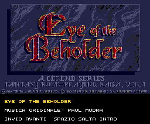

Eye of the Beholder

Raduna il tuo gruppo.
L’introduzione, quattro eroi da creare e un dungeon da esplorare.
Grafica VGA adattata a 16 colori e musica originale.
Introduzione e creazione dei personaggi
Nell’introduzione, Invio avanza alla scena successiva; Spazio o Esc aprono subito il menu. Scegli con W/S e conferma con Invio. Puoi creare quattro eroi, usare un gruppo predefinito o rivedere l’introduzione.
Nella creazione: 1–4 seleziona eroe, Q E cambia ritratto, R razza, C classe, F sesso, G allineamento. W S seleziona la caratteristica, A D modifica il valore, T ritira i valori, N cambia nome. Invio conferma ogni eroe, poi il gruppo.
Obiettivo e altri comandi
Sconfiggi il kobold, raccogli la chiave, apri la porta e raggiungi l’uscita. Le due pozioni curano il gruppo. R ricomincia il dungeon, F2 torna all’introduzione, U attiva/disattiva la musica, B cambia chip audio. Rilascia un tasto prima del comando successivo.
È una demo in sviluppo con una mappa originale 12×12 e regole semplificate. L’introduzione ricostruisce sei scene con immagini originali; non è ancora il port completo del gioco PC.